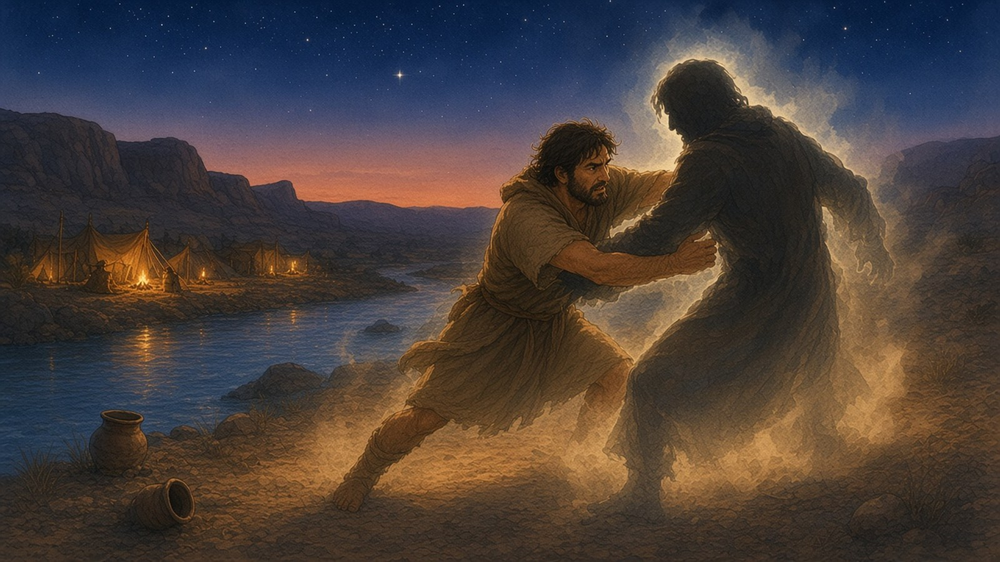
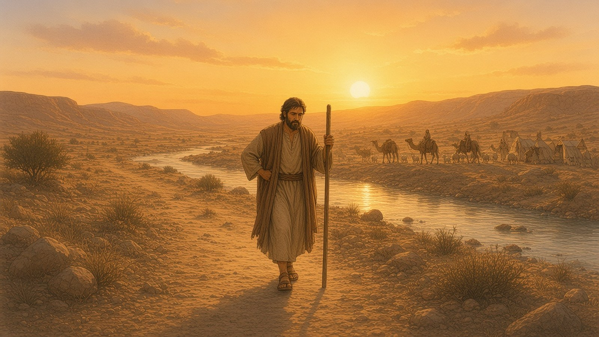
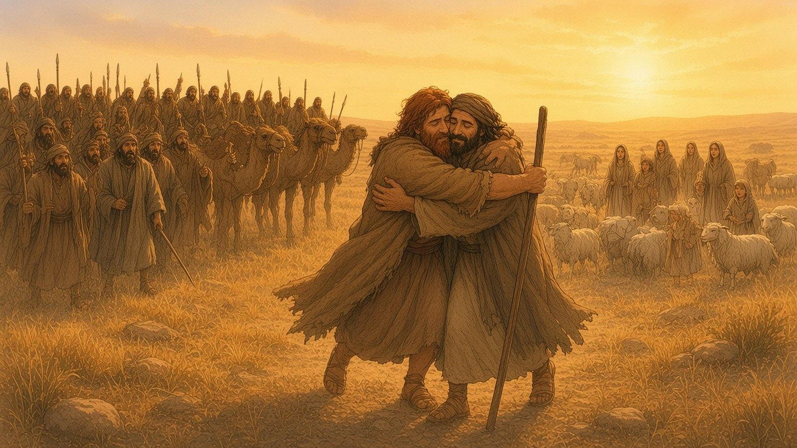

📜 Vayishlach (וַיִּשְׁלַח): Until the Sun Comes Up
Shabbat 28 November 2026 · 18 Kislev 5787 · Genesis 32:4–36:43
Twenty years earlier, a young man had run away from home in the dark, with a stolen blessing and a furious brother behind him. Tonight he is coming back. He is no longer young, and he is no longer alone, and he is more frightened than he has ever been in his life.
His name is Yaakov, which means something like "heel-grabber." He was born holding on to his twin brother's heel, as if even in the womb he was trying to get ahead. He grabbed the birthright for a bowl of red soup. He grabbed the blessing by putting on his brother's clothes and a pair of goatskin gloves and telling his blind father, "I am Esav." Then he spent twenty years in Haran, where his uncle Lavan showed him what it feels like to be on the other end of a trick. Yaakov left with two wives, Leah and Rachel, their maids Bilhah and Zilpah, eleven sons, a daughter, and more sheep and goats than anyone could comfortably count.
And now the road home runs straight past Esav.
The portion is called Vayishlach, "and he sent," because that is the first thing Yaakov does. He sends messengers ahead with a very polite speech: tell my lord Esav that his servant Yaakov has been living with Lavan all this time, and has done well, and hopes to find favour in his eyes. It is the speech of a man who has rehearsed it many times in his head.
The messengers come back quickly. Too quickly.
"We went to your brother," they say. "He is already on his way to meet you. And there are four hundred men with him."
Four hundred. The Torah says Yaakov was very afraid and distressed. Rashi, the great eleventh-century commentator, notices that it uses two different words and explains them: he was afraid he might be killed, and distressed that he might have to kill. Even in his panic, the thought of hurting his brother sits as heavily on him as the thought of being hurt.
So Yaakov does what he has always done. He plans. He divides his family and flocks into two camps, so that if Esav attacks one, the other might escape. He prays, and it is the first time we hear him pray like this, plainly and without bargaining: I am too small for all the kindness You have shown me. I crossed this Jordan with only my walking stick, and now I have become two camps. Save me, please, from my brother's hand. And then, because he is still Yaakov, he spends the whole afternoon organising a present.
Two hundred she-goats and twenty he-goats. Two hundred ewes and twenty rams. Thirty nursing camels with their young. Forty cows and ten bulls. Twenty she-donkeys and ten donkeys. He sends them off in separate droves, with a gap between each one, and gives every herdsman the same line to say: these are a gift from your servant Yaakov, and look, he himself is right behind us. Wave after wave of animals, so that by the time Esav reaches his brother, he will have been apologised to five hundred and fifty times.
"I will cover his face with the gift," Yaakov says to himself, "and afterwards I will see his face. Perhaps he will lift up my face." Keep an eye on that word, face. It is going to follow Yaakov all night.
Night falls over the river Yabok, a fast stream cutting through a rocky gorge east of the Jordan. Yaakov gets up in the dark and takes everyone across: the two wives, the two maids, the eleven boys, the girl, the tents, the bleating, complaining flocks. Torches bob across the ford. Children are passed from hand to hand over the cold water. Then they are all on the far side, and the campfires begin to glow among the tents.
And Yaakov goes back.
The Torah doesn't say why. It only says vayivater Yaakov levado, "and Yaakov was left alone." The rabbis of the Talmud, who could never resist a gap in a story, supplied a reason: he had gone back for some small jars he had forgotten. Picture it. The man who has just given away five hundred and fifty animals wades back across a river in the dark for a couple of clay pots. Perhaps it is just the habit of a man who has had to fight for every single thing he owns. Perhaps he simply needed a few more minutes before morning.
Either way, here he is: alone, on the wrong side of the water, with the jars at his feet and his family's fires flickering across the river.

Then someone grabs him.
There is no warning and no introduction. The Torah calls him only ish, "a man." No name, no face, no explanation. One moment Yaakov is alone, and the next he is on the ground in the dark with a stranger's arms around him, and the two of them are struggling in the dirt.
The Hebrew word for what happens next is vaye'avek, "and he wrestled." One old commentator heard in it the word avak, dust, as if the whole night were a cloud of dust kicked up by two men rolling across the riverbank. Rashi preferred another meaning: to clasp, to be bound together, the way two people grip each other so tightly that it is hard to tell where one ends and the other begins. Both images fit. It is a fight, and also, strangely, something close to an embrace.
They wrestle for hours. The fires on the far bank burn low. The river keeps up its noise. Neither of them gives up.
Who is this stranger? The Torah never says. Over the centuries people have offered answers. The midrash says he was Esav's guardian angel, come to settle the old argument before the brothers met in daylight. Others have said he was an angel of God, or God Himself, or Yaakov's own conscience, the part of him he had been running from for twenty years. The beauty of the story is that it doesn't choose. In the dark you cannot see a face. You can only feel how hard someone is holding on.
And Yaakov holds on. All his life he has been a grabber, but always sideways: a heel, a bowl of soup, a disguise, a blessing that was meant for someone else. Tonight he is not grabbing anything. He is just refusing to let go.
Slowly, the sky over the eastern hills begins to change. The black turns to deep blue, the deep blue to grey, and along the very edge of the world a thin line of pink appears.
The stranger sees that he cannot win. So he reaches down and touches Yaakov on the hollow of his thigh, at the hip, and the joint wrenches out of place. Yaakov gasps. But his hands stay where they are.
"Let me go," says the stranger, "for the dawn is rising."
The rabbis enjoyed this line too. Angels, they said, sing God's praise every morning, and this one was worried about missing his place in the choir.
But Yaakov answers with the most famous sentence of the night: lo ashalechacha ki im berachtani. "I will not let you go unless you bless me."
It is a remarkable thing to say. The last time Yaakov wanted a blessing, he lied to get it. This time he asks for it to its face, with a dislocated hip, at the end of a night that has cost him everything he had left.
Then the stranger asks him a question. A simple one.
"What is your name?"
Think about the last time someone asked Yaakov that. It was twenty years ago, in his father's dark tent. Old Yitzchak, who could no longer see, asked, "Who are you, my son?" And Yaakov said, "I am Esav, your firstborn."
Now, on the riverbank, in the grey light, with nobody to impress and nowhere left to run, he tells the truth.
"Yaakov."
Just that. The heel-grabber. The one who got ahead by holding on to someone else.
"Your name will no longer be Yaakov," says the stranger, "but Yisrael, because you have struggled with God and with people, and you have prevailed."
Yaakov asks the stranger for his name in return, and gets no answer, only a blessing. And then, between one moment and the next, he is gone, and Yaakov is alone again on the bank with the jars and the dust and the sound of the water.
He names the place Peniel, "the face of God." "Because," he says, "I have seen God face to face, and my life has been spared."
The Torah gives this moment one of its loveliest lines: vayizrach lo hashemesh, "and the sun rose for him." Not just "the sun rose," but for him, as though the morning had been waiting all night for Yaakov to be ready.
He crosses back over the river, and he is limping.

Every step reminds him of the night. He has won, and he has a new name, and he walks like a man who has been hurt. Both things are true at the same time, and they will stay true. To this day, the Torah says, the children of Israel do not eat the sinew at the hip, the gid hanasheh, in memory of where the stranger touched him. A whole people still carries a small reminder of one man's limp.
He reaches the camp. He looks up. And there, on the far side of the plain, a long dark line is moving toward them through the morning haze. Four hundred men. And at the front of them, unmistakable even from a distance, red-haired and broad-shouldered, his brother.
Yaakov arranges his family one last time: the maids and their children first, then Leah and hers, then Rachel and little Yosef at the very back. But then he does something new. He does not hide behind the gifts or the camps. He walks out in front of everyone, limping, and goes to meet his brother himself. Seven times he bows down to the ground, as he walks toward him, one painful step at a time.
And Esav runs.
Not with a sword, and not with his four hundred men. He runs across the field alone, the way you run toward someone you have missed for twenty years without quite admitting it. He throws his arms around Yaakov. He falls on his neck. He kisses him. And the two of them, two grown men with grey in their beards and a lifetime of grievance between them, stand in the middle of the field and weep.

In a handwritten Torah scroll, the word for "and he kissed him," vayishakehu, has a small dot over every one of its letters. It is one of only a few dotted words in the whole Torah, as though the scribes wanted us to pause there and look again. Some of the rabbis said the dots meant Esav didn't really mean it. But Rabbi Shimon bar Yochai, who had his own reasons to be suspicious of Esav's descendants, said the opposite: that at that moment, just this once, Esav's heart was moved, and he kissed his brother with all of it.
Esav looks up and sees the women and the children. "Who are all these?"
"The children God has kindly given your servant," says Yaakov.
"And what was all that?" asks Esav, waving toward the endless parade of goats and camels he has been passing all morning.
"To find favour in your eyes."
"I have plenty, my brother," says Esav. "Keep what is yours."
And Yaakov answers with the words that tie the whole night together: "No, please. Take my gift. For seeing your face is like seeing the face of God, and you have received me kindly."
Last night he saw the face of God in a stranger he could not see. This morning he sees it in the brother he was sure wanted him dead. Perhaps those were never two different encounters. Perhaps the hardest face to look at is always the face of someone you have wronged, and the bravest thing a person can do is walk toward it, limping, in broad daylight.
The brothers part in peace. Esav goes back to Seir, and Yaakov, moving slowly for the sake of the children and the young animals, makes his way west. He builds a house and simple shelters for his cattle, and names the place Sukkot, "booths." The road ahead will still bring sorrow. Near Bethlehem, Rachel will die giving birth to his twelfth son, and Yaakov will name the baby Binyamin, "son of my right hand," a name of hope rather than grief. Years later, when their father Yitzchak dies, the two brothers will stand side by side once more to bury him.
But that is all still to come. For now there is just a man with a new name walking toward home in the morning sun, with a limp he will carry for the rest of his life, and a brother who ran to meet him.
And somewhere, on the far bank of the Yabok, two small clay jars, still waiting.